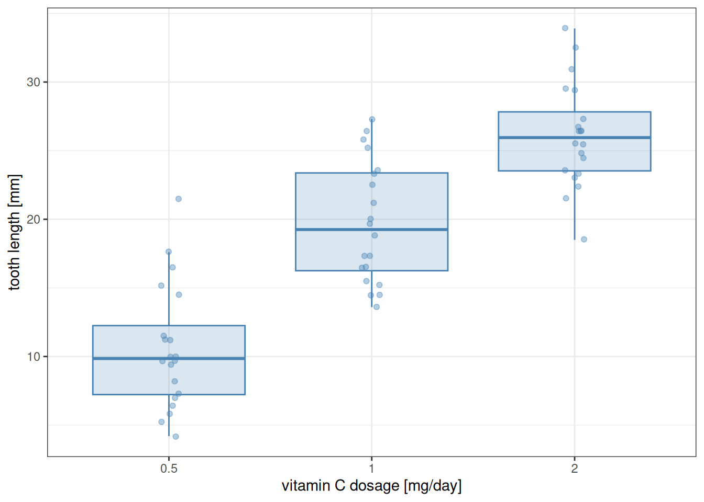
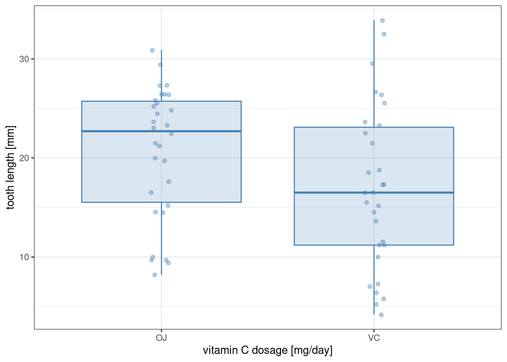

Chapter 10 discussed techniques for analyzing data which fall into multiple categories, but those categories are levels of a single factor. Here we go further and work with data classified by two independent factors.
A good example is provided by the built-in dataset ToothGrowth, which contains data on the tooth growth of Guinea pigs in response to receiving vitamin C.
Exploring the data more closely, it turns out that there are three dosage levels (0.5, 1, and 2) and two types of supplement (VC for raw vitamin C or ascorbic acid, and OJ for orange juice). As usual, we first visualize the data. In doing so, it is useful to convert dose to a factor (Section 7.3): the three dosage levels play the role of a categorical variable (“low”, “medium” ,and “high” levels of vitamin C dosage), and we are not so interested in the actual magnitudes of those dosages.
Intuitively, we would expect there to be an effect of dosage, because the higher the dosage the longer the teeth become. We would also expect an effect of supplement type, because orange juice seems to perform better (at least no worse) than raw ascorbic acid in facilitating tooth growth. Continuing with the linear models from Chapter 10, it is easy to include two factors:
Analysis of Variance Table
Response: len
Df Sum Sq Mean Sq F value Pr(>F)
dose 2 2426.43 1213.22 82.811 < 2.2e-16 ***
supp 1 205.35 205.35 14.017 0.0004293 ***
Residuals 56 820.43 14.65
---
Signif. codes: 0 '***' 0.001 '**' 0.01 '*' 0.05 '.' 0.1 ' ' 1
The new feature above is the inclusion of dose + supp as the predictor, instead of just a single one. As seen from the ANOVA table, both the effects of dosage and supplement type appear to be real.
However, this model ignores something that might be potentially relevant: the interaction between the two factors. This means that the nature of the relationship between tooth length and one of the predictors depends on the value of the other predictor. For the Guinea pig data, a case can be made that the effect of the supplement type depends on dosage: when the dosage level is either 0.5 or 1 mg/day, orange juice leads to longer teeth than ascorbic acid—but this benefit disappears at the highest dosage level of 2 mg/day.
Accounting for interaction terms in a statistical model is easy. All one needs to do is add one more term to the formula, denoted dose:supp:
Analysis of Variance Table
Response: len
Df Sum Sq Mean Sq F value Pr(>F)
dose 2 2426.43 1213.22 92.000 < 2.2e-16 ***
supp 1 205.35 205.35 15.572 0.0002312 ***
dose:supp 2 108.32 54.16 4.107 0.0218603 *
Residuals 54 712.11 13.19
---
Signif. codes: 0 '***' 0.001 '**' 0.01 '*' 0.05 '.' 0.1 ' ' 1
The model result confirms that our intuition was likely correct: there does appear to be a real interaction effect between the two factors.
The inclusion of two factors with their interaction is so common in linear models that there is a shorthand notation to make it easier. Writing dose * supp is exactly the same as the above dose + supp + dose:supp. Let us see this in action:
Analysis of Variance Table
Response: len
Df Sum Sq Mean Sq F value Pr(>F)
dose 2 2426.43 1213.22 92.000 < 2.2e-16 ***
supp 1 205.35 205.35 15.572 0.0002312 ***
dose:supp 2 108.32 54.16 4.107 0.0218603 *
Residuals 54 712.11 13.19
---
Signif. codes: 0 '***' 0.001 '**' 0.01 '*' 0.05 '.' 0.1 ' ' 1
The two results are identical.
As in the case of one-way ANOVA, diagnostic plots and post-hoc testing (Tukey test) are useful tools. The diagnostic plots look excellent, so we can be confident about interpreting the p-values and other statistics of the linear model correctly:
(Again, due to how TukeyHSD is designed, the aov function must be called before one can use it on a linear model fit.) Here we first have a comparison between the dosage levels, averaging over supplement type. Even after this averaging there is a clear difference between the effects of each dosage level, as can be suspected based on a plot which ignores the supp factor:
as_tibble(ToothGrowth) %>%mutate(dose =as_factor(dose)) %>%ggplot() +aes(x = dose, y = len) +geom_boxplot(alpha =0.2, outlier.shape =NA,colour ="steelblue", fill ="steelblue") +geom_jitter(alpha =0.4, width =0.05, colour ="steelblue") +labs(x ="vitamin C dosage [mg / day]", y ="tooth length [mm]") +theme_bw()

Similarly, the difference between the two supplement types appears to be real (the Tukey test gave p adj = 0.0002312), even when not distinguishing by dosage—although this is somewhat less visible on a graph:
as_tibble(ToothGrowth) %>%ggplot() +aes(x = supp, y = len) +geom_boxplot(alpha =0.2, outlier.shape =NA,colour ="steelblue", fill ="steelblue") +geom_jitter(alpha =0.4, width =0.05, colour ="steelblue") +labs(x ="vitamin C dosage [mg / day]", y ="tooth length [mm]") +theme_bw()

Finally, in the $`dose:supp` part of the table, one can compare every particular experimental group (indexed by both dose and supp) with every other.
It is possible to use the summary function instead of anova when running the linear model. However, this table is likely not what we are looking for, because instead of having one row per factor and their interaction, it prints one row per fitted parameter. In case one is curious, here is what it looks like:
Call:
lm(formula = len ~ dose * supp, data = .)
Residuals:
Min 1Q Median 3Q Max
-8.20 -2.72 -0.27 2.65 8.27
Coefficients:
Estimate Std. Error t value Pr(>|t|)
(Intercept) 13.230 1.148 11.521 3.60e-16 ***
dose1 9.470 1.624 5.831 3.18e-07 ***
dose2 12.830 1.624 7.900 1.43e-10 ***
suppVC -5.250 1.624 -3.233 0.00209 **
dose1:suppVC -0.680 2.297 -0.296 0.76831
dose2:suppVC 5.330 2.297 2.321 0.02411 *
---
Signif. codes: 0 '***' 0.001 '**' 0.01 '*' 0.05 '.' 0.1 ' ' 1
Residual standard error: 3.631 on 54 degrees of freedom
Multiple R-squared: 0.7937, Adjusted R-squared: 0.7746
F-statistic: 41.56 on 5 and 54 DF, p-value: < 2.2e-16
11.2 The Scheirer–Ray–Hare test
Like in the case of one-way ANOVA, there is a non-parametric version of the two-way ANOVA as well. This is the Scheirer–Ray–Hare test, which is therefore the two-way analogue of the Kruskal–Wallis test. To use this test, one must install and load the package rcompanion:
install.packages("rcompanion")library(rcompanion)
And now, we can use the function scheirerRayHare much like kruskal.test or lm:
Note that this test is skeptical about the role of the supplement type, and definitely thinks that the interaction between it and dosage is not different from what one might get by pure chance. This illustrates one problem with the test: it is not very powerful in detecting patterns, even when they are there. To make matters worse, there is no appropriate post-hoc test available in conjunction with the Scheirer–Ray–Hare test. For these reasons, its use is more restricted than of other non-parametric tests, like the Wilcoxon and Kruskal–Wallis tests. It is good to know about it as an option, but often one must rely on other methods, such as the parametric two-way ANOVA.
11.3 Exercises
The file cow_growth.csv has data on the growth of individual cows which have received different grains (wheat, oats, or barley) and, independently, one of four different dietary supplements (one of which is no supplement, for control). Each of these diet combinations (twelve diets: three grains, times four supplements) had four cows observed. Is there any effect of these treatments on cow growth? Is there any interaction between the grain and the supplement given to the cows—some secret super-combination which makes the cows grow especially well (or poorly)?
As usual, before doing any tests, visualize and explore the data, and make sure you have a solid expectation for the results of any statistical analysis.
Answer the question by first applying a non-parametric test.
Next, apply a parametric test. Run post-hoc tests as well if needed. Do not forget to create diagnostic plots, to see if the assumptions behind the parametric test are satisfied to an acceptable degree.
The built-in CO2 data frame contains measurements from an experiment on the cold tolerance of the grass species Echinochloa crus-galli. The dataset has five columns:
Plant: unique identifier for each plant individual.
Type: either Quebec or Mississippi, depending on the origin of the plant.
Treatment: whether the plant individual was chilled or nonchilled for the experiment.
conc: carbon dioxide concentration in the surrounding environment.
uptake: carbon dioxide uptake rate.
How do uptake rates depend on Type, Treatment, and their interaction? (For this exercise, you can ignore Plant and conc.) Start by forming a hypothesis based on visualizing the data. Then perform both parametric and non-parametric tests (and a post-hoc test for the latter). When relying on parametric tests, make sure to use diagnostic plots to gauge the quality of its assumptions.